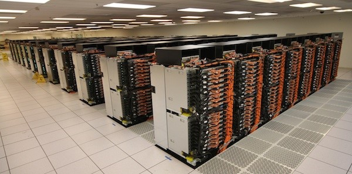

Больше информации по теме:
Что такое суперкомпьютер?

Суперкомпьютер IBM
Суперкомпьютеры используются для решения интенсивных вычислением задач,
таких как проблемы в области квантовой физики или механической физики, прогноз погоды,
исследование климата, молекулярное моделирование (вычисление структуры и свойства химических составов,
биологических макромолекул, полимеров, и кристаллов), физическое моделирование (моделирование самолетов, моделирование
взрыва ядерного оружия, исследование относительно ядерного сплава), криптоанализ, и т.п.